Partes de una impresora 3D
El Hotend o Fusor, es el
elemento de la impresora 3D que funde el filamento.
El nozzle o Boquilla: tienen un
orificio por donde sale plástico fundido, este orificio puede tener
distintos diámetros,
Base de impresión de tamaño 220*220 nos limita el tamaño máximo de
la base de la pieza, la altura en nuestra impresora es recomendable
no superar los 200 mm, la base de impresión esta calefactada para
mejora el agarre de pieza a la base, la temperatura de la base para
las primeras capas la hacemos a 70º y cuando empieza con la capas
sucesivas bajamos la temperatura 40º, estas temperaturas, también se
puede añadir laca al inicio de la impresión con lo que se mojora el
agarre de las piezas con base muy pequeña, si la base es muy grande
y utilizamos la cama caliente y laca la pieza quedara muy pegada la
base y costara mucho despegarla. Para retirar la pieza de la base
cuando halla terminado, se recomienda dejar pasar un tiempo para
despegar mejor la pieza de la base.
El filamento se introduce en el hotend o fusor gracias a la
polea extrusora, en nuestro caso hemos utilizado la MK8,
para filamento de 1,75 mm, se debe de regular la presión entre la
polea extrusora y el filamento con un tensor, una presión
insuficiente o que la polea tensora de este bien sujeta al eje motor
que la hace girar, tiene como resultado que el filamento no avance
para introducirse en el hotend, para comprobar que el filamento
avanza, suelo marcar con un rotulador una linea en el filamento
antes de entrar por la guía de teflón.
Para introducir o sacar el filamento del hotend este debe de estar
caliente.
Creación de G-Codes conSLIC3R
Prepara tus modelos3D para imprimir en tu impresora 3D con el
programa Slic3r.
Descarga
el programa Slir3r. Programa portable, no hace falta
instalarlo, se puede llevar en pendrive y utilizar en cualquier
ordenador.
A partir de los modelos que has descargado o que has creado, se
deben de preparar para la impresión 3D, indicándoles con un programa
de laminado los parámetros a utilizar en tu impresora como
temperatura a la que vas a fundir el plástico, tipos de plástico,
tipo de relleno de las partes macizas, acabados de las piezas y
muchos mas parámetros.
Para empezar puedes descargarte este
perfil para empezar a imprimir tus modelos.
Se debe de cargar el modelos 3D en el programa Slic3r debe de tener
formato stl, si el modelos esta descargado de Internet, los mas
seguro que ya este en este formato, si lo has diseñado con algún
programa de CAD o de modelado debe de exportarlo o convertirlo ha
este formato.
VideoTutoriales
BQ Educación | Slic3r – Tutorial software para imprimir en 3D
Manual Slic3r
Guía visual de impresión 3D con slic3r
Cargar pieza
Cargar
la pieza en formato stl: file/open STL buscar carpeta donde
esta la pieza creada o descargada, seleccionarla y abrir.
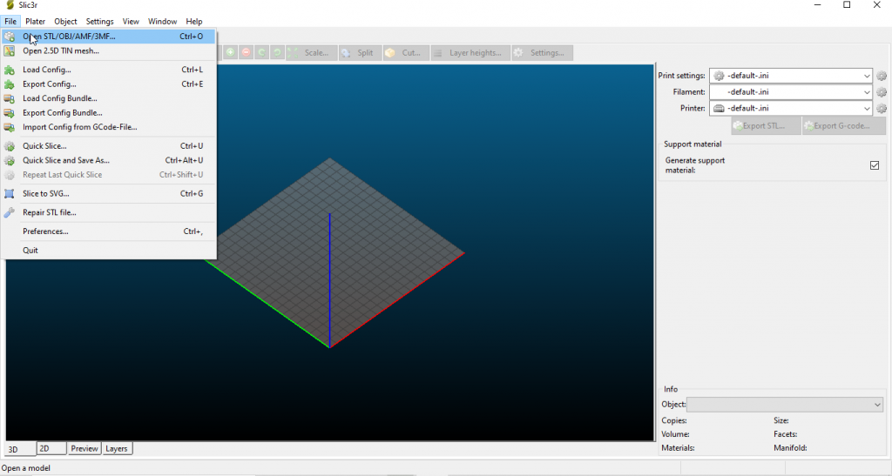
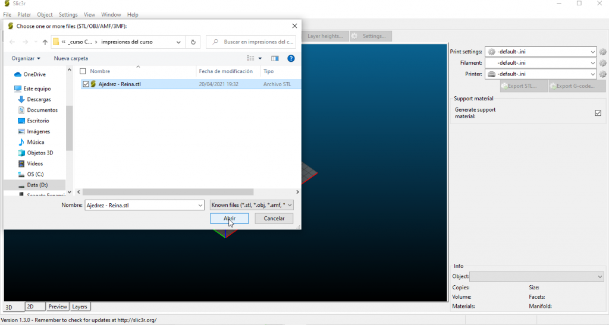
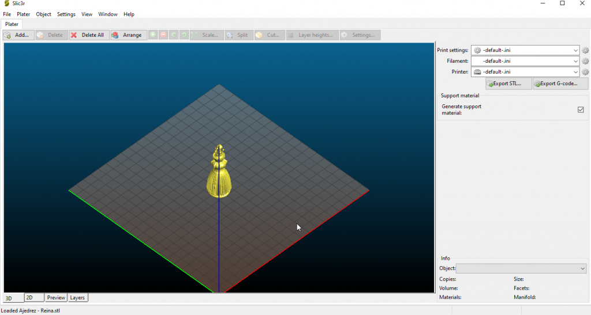
Modificar la pieza
Seleccionamos
la pieza pinchándola con el puntero, se queda en color verde
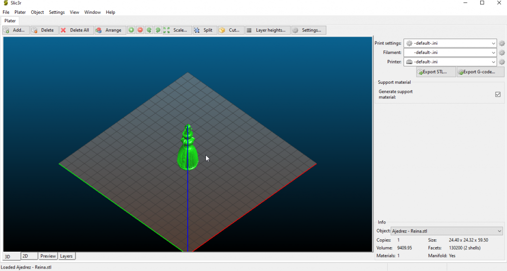
Seleccionamos la opción Object en el menú principal.
Delete: Borra la pieza seleccionado
Increase copies: copia el objeto seleccionado, para hacer dos o
más impresiones.
Decrease copies: quita una copia.
Set number of copies: crea directamente el número de copias que se
indique.
Rotate 45º: gira el objeto 45 grados en sentido horario o
antihorario en el eje z
Rotate: rota el objeto según el eje seleccionado el angulo
indicado. SE UTILIZA PARA COLOCAR EL OBJETO EN LA POSICIÓN MAS
IDÓNEA PARA LA IMPRESIÓN.
Mirror: crea una copia espejo del objeto seleccionado.
Scale: Escala la pieza según porcentaje, 50% mitad, 200% doble…
Scale to size: Escala la pieza al tamaño indicado.
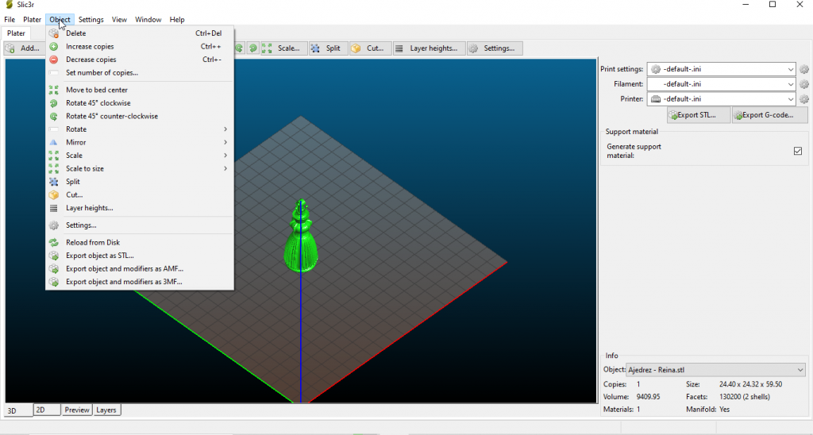
Rotate se utiliza para colocar la pieza en la mejor posición para la
impresión, para crear los menos soportes posibles y las cara visibles
tengan un mejor acabado.
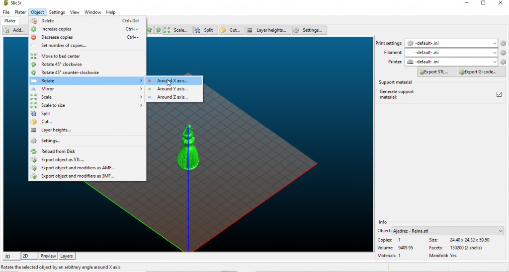
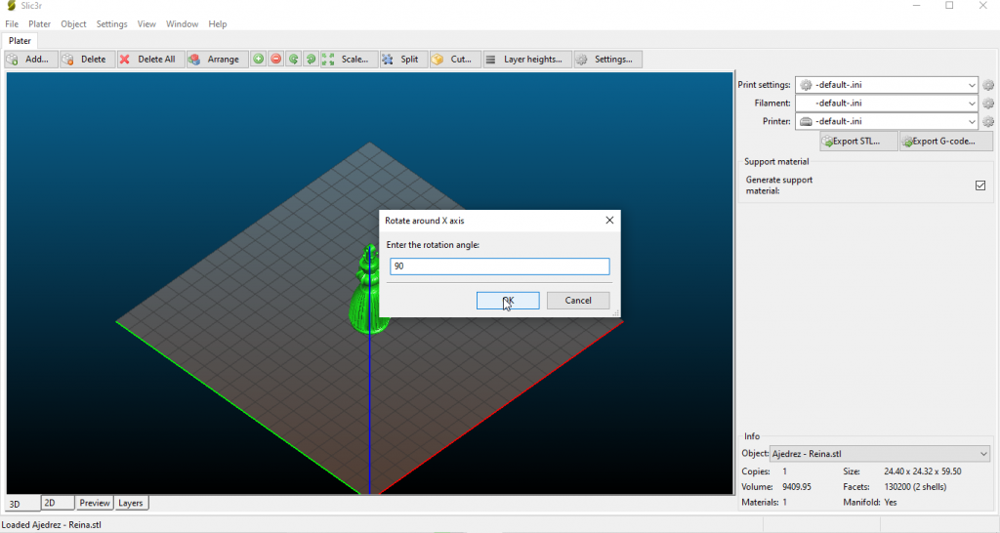
Cargar el perfil de impresión
En el perfil de impresión se encuentra todos los parámetros para
imprimir el objeto en nuestra impresora, al cargar este perfil
simplificamos este trabajo.
El perfil se puede descargar
pinchando aqui, esta en comprimido en formato zip.
file/Load config..
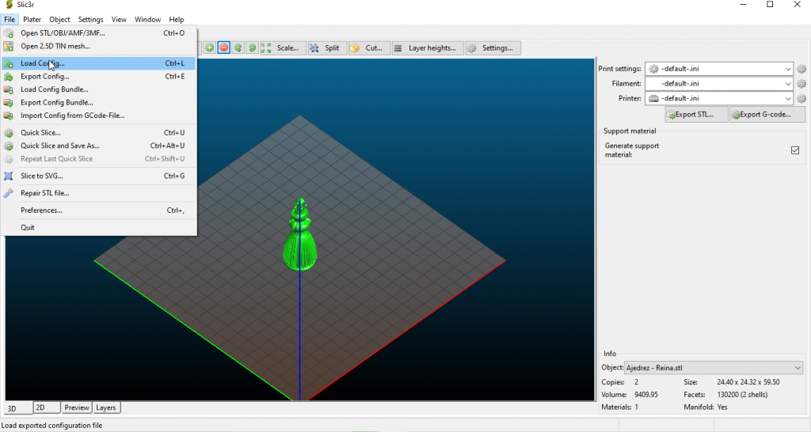
Buscamos la carpeta donde hemos descomprimido el perfil, lo
seleccionamos y pulso abrir.
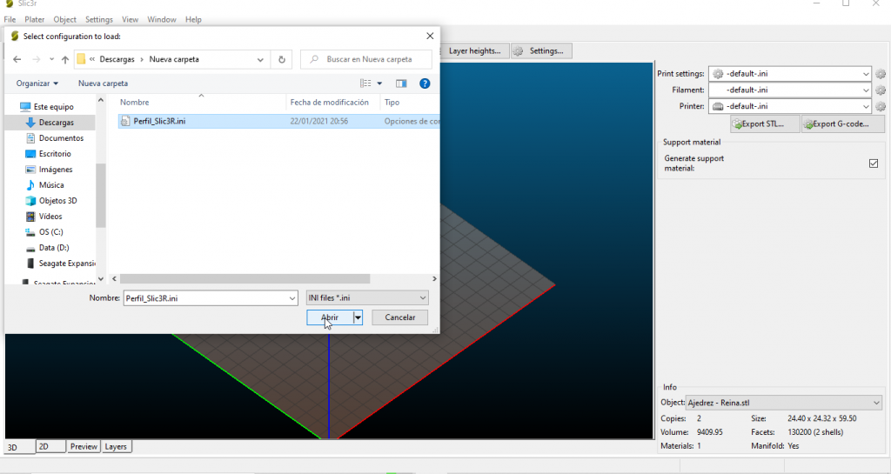
Observamos en la parte derecha que se a cargado el perfil
correctamente.
Ahora podemos, si asi lo deseamos modificar algunos parámetros,
para conocer que hace cada parámetro podemos consultar las guías
Slic3d en los enlaces de la sección CREACIÓN DE GCODES CON SLIC3R
Creación del G-code
El último paso es la creación del archivo G-code para copiarlo en
una tarjeta SD y cargarlo en la impresora.
Plater/ Export G-code – y elegimos el
nombre y la carpeta donde deseamos guardarlo.
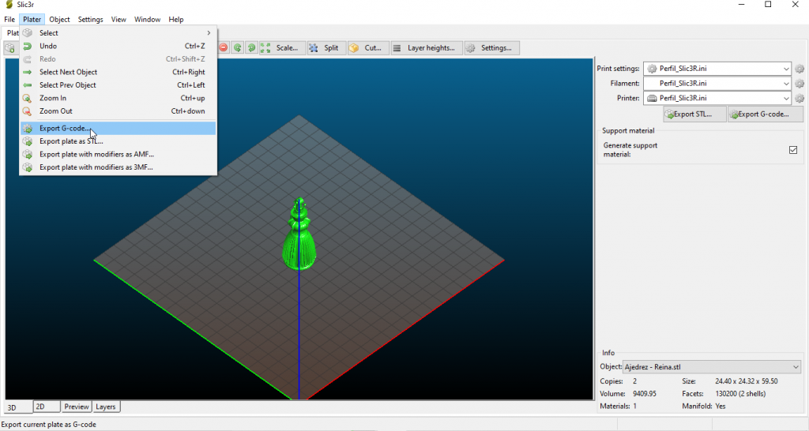
En la zona inferior derecha vemos el proceso de creación y cuando
termina vemos el peso y precio aproximado de las piezas impresas.
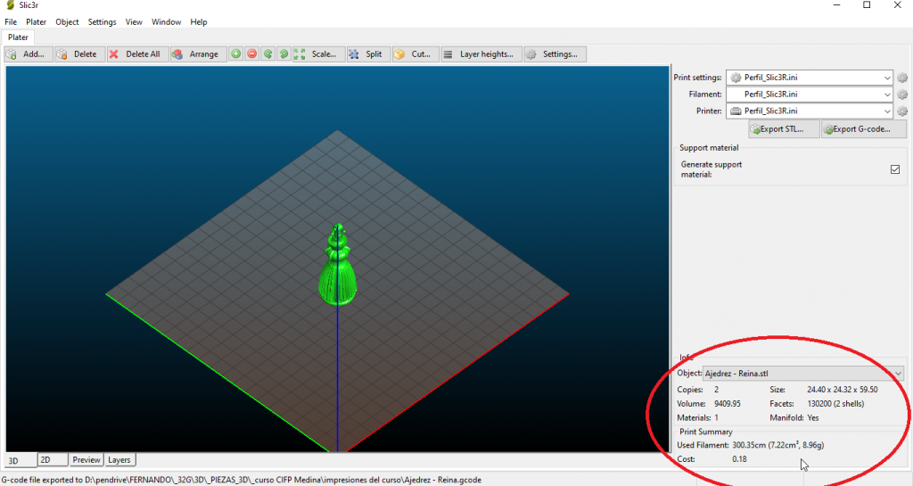
Impresión
Grabamos el archivo creado con extensión gcode en una tarjeta SD
la introducimos en la ranura con los contactos de la tarjeta
mirándonos a nosotros.
Pulsamos
el botón azul entrar el la pantalla principal
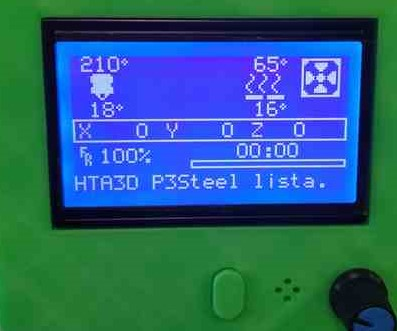
Girando
el botón azul en sentido antihorario selecciona la opción MENU
DE SD
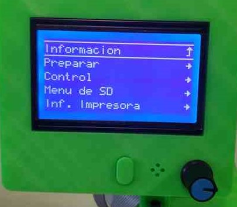
Vemos
los archivos gcode de la tarjeta, girando el botón azul selecciono
el archivo que quiero imprimir, y pulso el botón azul..
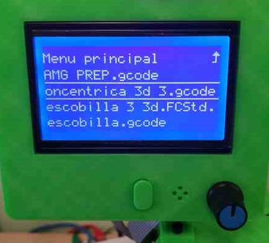
Y YA ESTAMOS IMPRIMIENDO.
Y cuando salen mal las cosas.
Guía de resolución de problemas
Identificar
y corregir problemas de impresión 3D
Problemas de impresión 3D. Como evitarlos.
Guía
visual para resolver problemas impresión 3D por Bitfab
Enlaces de interes
Impresión
3D según Luis Llamas.
Tus diseños con FREECAD
Descarga el programa freecad.
FreeCAD,
Tu propio modelador paramétrico 3D
Aprende utilizar FREECAD con Obijuan.
Dos cursos muy didácticos para empezar conocer el programa
freecad, utiliza la versión 16, un poco antigua, pero validos
para versiones posteriores, esta a punto de salir la versión 0,19.
CURSO
I FREECAD
WIKI DEL CURSO I FREECAD
CURSO
II FREECAD
WIKI DEL CURSO II FREECAD
Manuales FREECAD avanzado.
Tato3D
CAD Tutoriales
FCGear
banco de trabajo para realizar engranajes.
Videotutorial: Dividir un objeto usando puntos y
planos de referencia
Videotutorial: FreeCAD y Assembly4: Animación de
tuerca en tornillo.
Videotutorial: Curso Profesional de FreeCad
TechDraw
Tutorial diseño 3D básico | FreeCAD | Generar
planos PDF
Codigo G con Inkscape para CNC